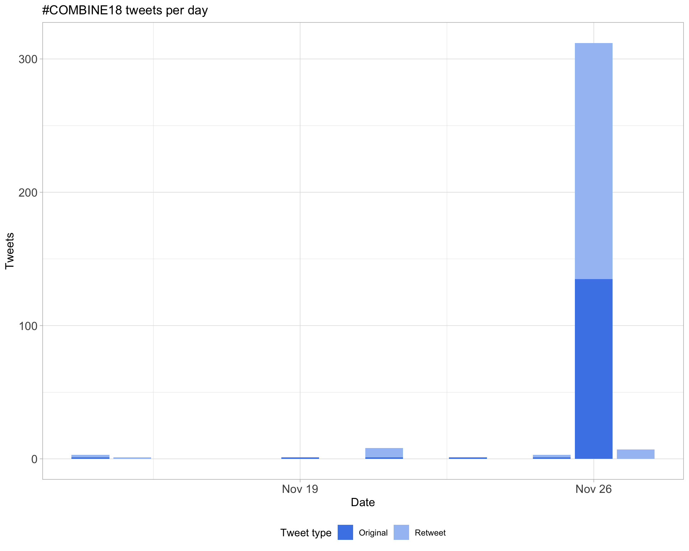
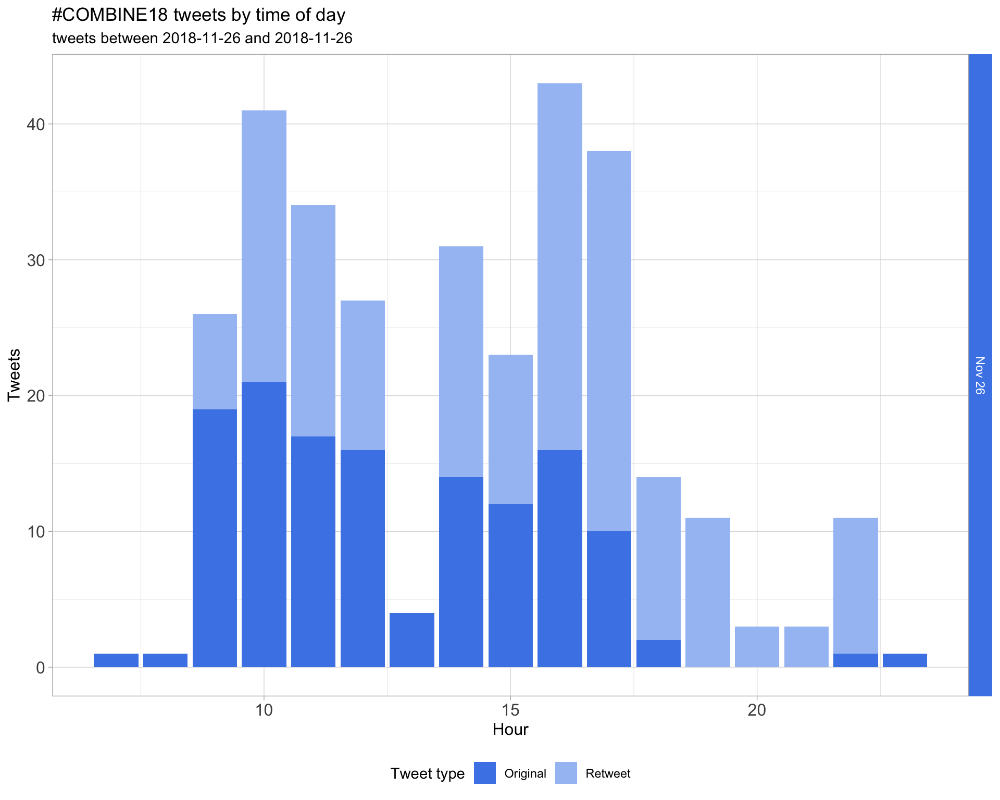
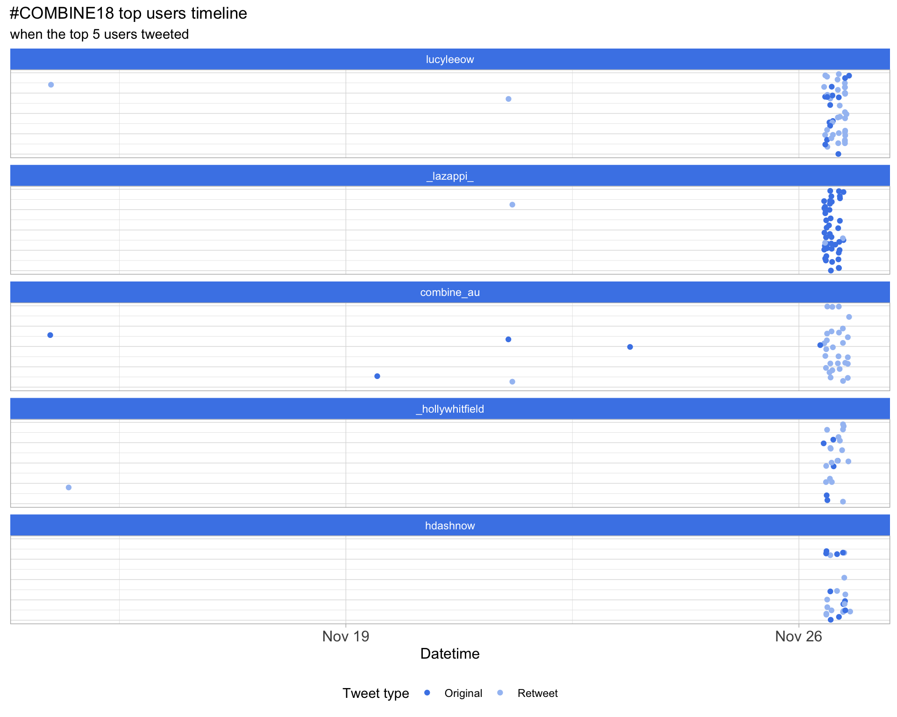
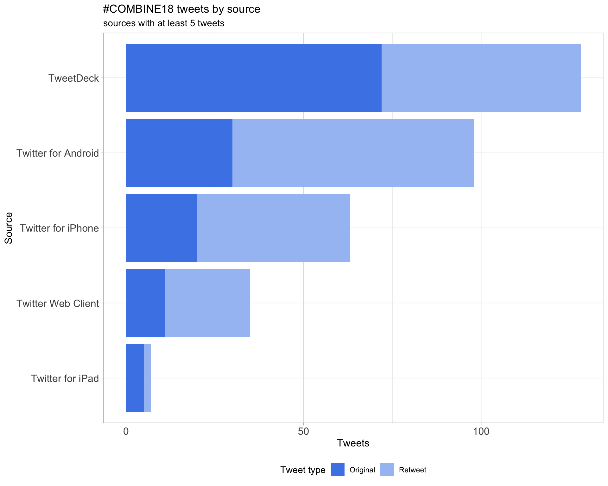
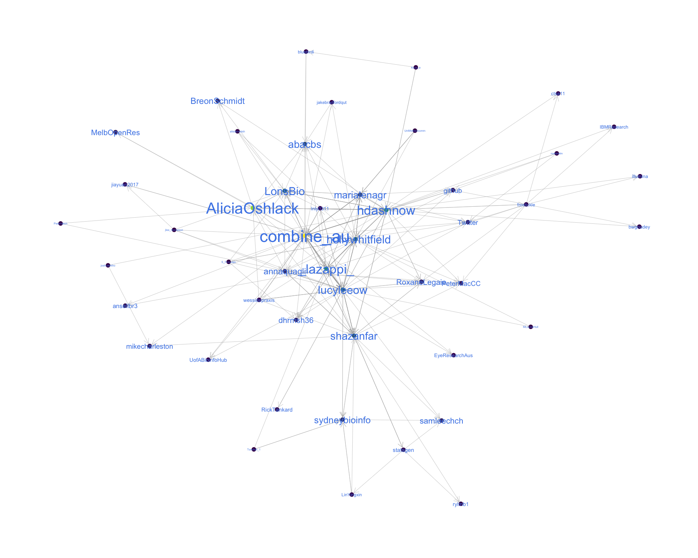
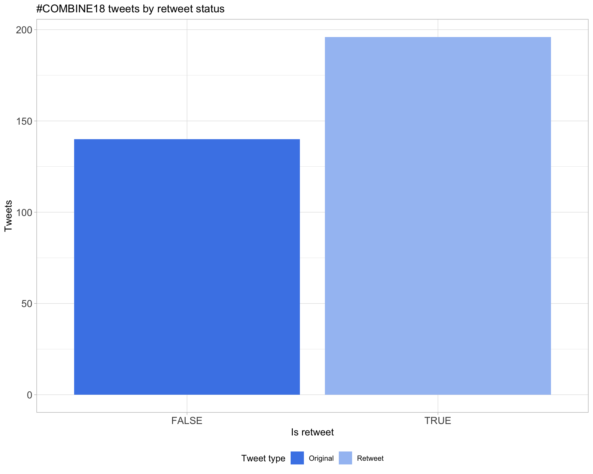
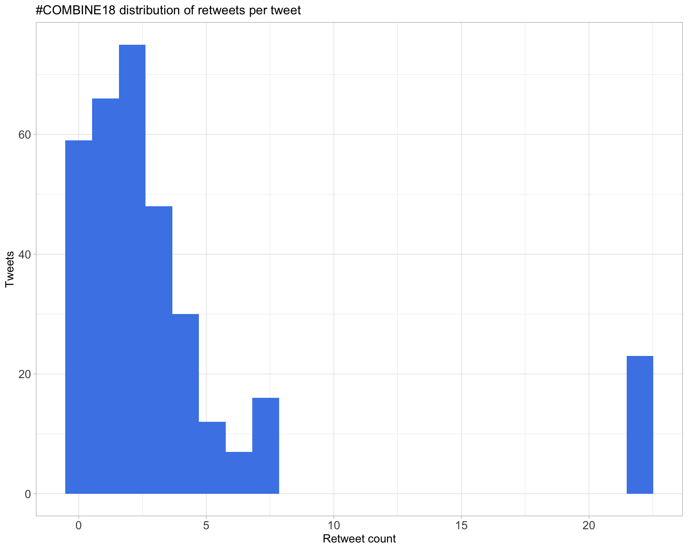
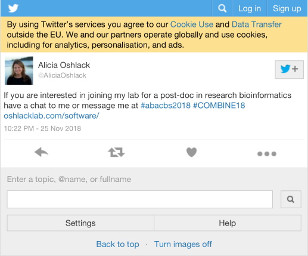
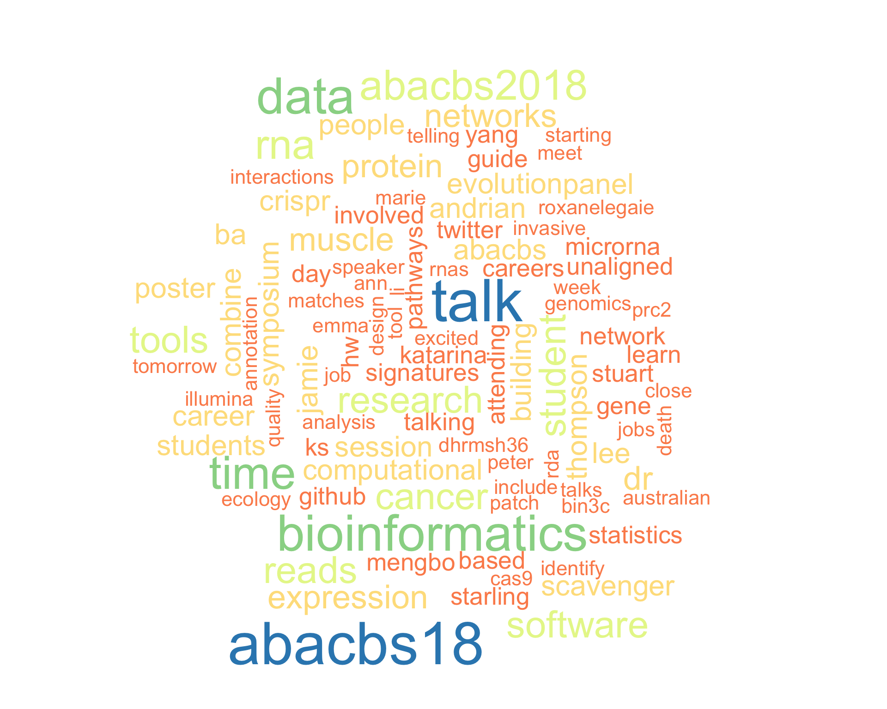
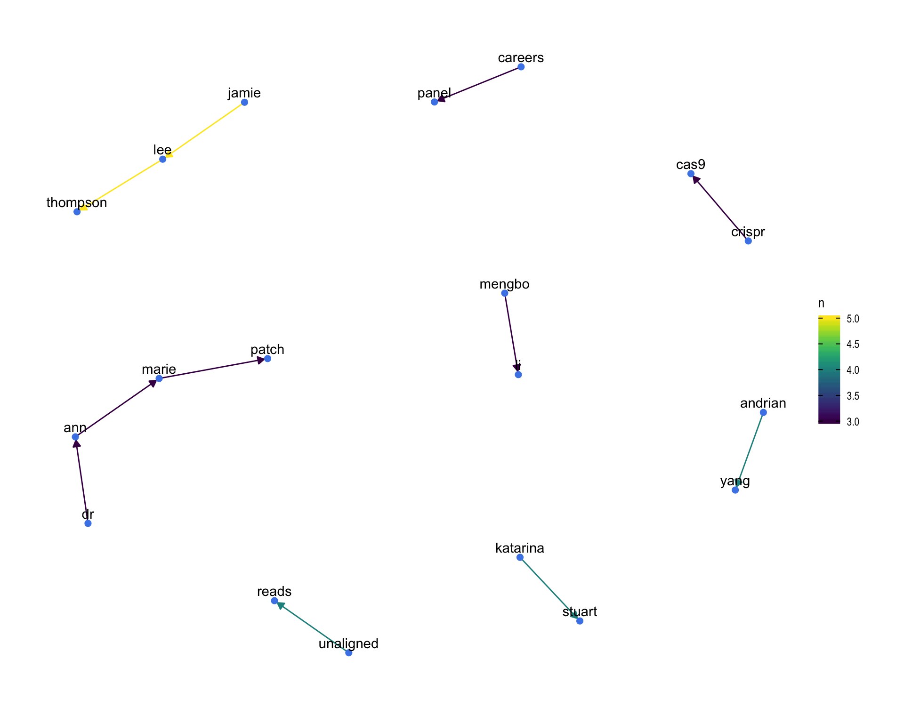

COMBINE18
COMBINE Symposium 2018
2019-07-12 15:02:12
Parameters
| Parameter | Value |
|---|---|
| hashtag | #COMBINE18 |
| start_day | 2018-11-26 |
| end_day | 2018-11-26 |
| timezone | Australia/Melbourne |
| theme | theme_light |
| accent | #4a86e8 |
| accent2 | #A4C2F3 |
| kcore | 2 |
| topics_k | 3 |
| bigram_filter | 3 |
| fixed | TRUE |
| seed | 1 |
1 Introduction
An analysis of tweets from the #COMBINE18 hashtag for the COMBINE Symposium, 26 November 2018 at The University of Melbourne, Melbourne Australia.
A total of 336 tweets from 72 users were collected using the rtweet R package.
2 Timeline
2.1 Tweets by day

2.2 Tweets by day and time
Filtered for dates 2018-11-26 - 2018-11-26 in the Australia/Melbourne timezone.

3 Users
3.1 Top tweeters
Overall
Original

Retweets
3.2 Retweet proportion

3.3 Top tweeters timeline

3.4 Top tweeters by day
Overall
Day 1
Original
Day 1
Retweets
Day 1
4 Sources

5 Networks
5.1 Replies
The “replies network”, composed from users who reply directly to one another, coloured by PageRank.
5.2 Mentions
The “mentions network”, where users mention other users in their tweets. Filtered for a k-core of 2. Node colour and size adjusted according to PageRank score.

6 Tweet types
6.1 Retweets
Proportion

Count

Top 10
| screen_name | text | retweet_count |
|---|---|---|
| AliciaOshlack |
If you are interested in joining my lab for a post-doc in research bioinformatics have a chat to me or message me at #abacbs2018 #COMBINE18 https://t.co/404MibRFnZ |
22 |
| combine_au | Today is the last day to register for #COMBINE18! You don’t want to miss out on hearing students talk about their excellent bioinformatics research https://t.co/frA23Wi19a. https://t.co/Fybmmg0Ktm | 7 |
| LonsBio | JLT acknowledges small university means a lack of a comp bio/bioinformatics cohort, and for me, this highlights how important #COMBINE18 and @combine_au is for bringing students together from different places to present, exchange ideas and create networks. Great talk! | 7 |
| hdashnow | #COMBINE18 suggestion to include your online presence in your CV/job application - @github @Twitter blog etc. | 6 |
| LonsBio | Strongly encourage getting involved in @combine_au for students at #COMBINE18 today, has led to many of my opportunities in bioinformatics | 5 |
| lazappi | Q: What skill do you wish you had when you started as a bioinformatician? A: Technical skills around statistics and computing but also how to work in a team a minimise conflict. Something important in the workplace but not really taught at uni. #COMBINE18 | 5 |
| shazanfar | #COMBINE18 panellists just highlighted the importance of communicating your research interests for cultivating your presence e.g. writing a blog. Building blogs are becoming muuch easier with tools like blogdown and helpful tutorials like @statsgen ’s https://t.co/akb6rfdtbo | 4 |
| MelbOpenRes |
Attending #ABACBS18 or #COMBINE18 this week and interested in #openscience? Consider an informal meet-up! This is a great opportunity to meet like minded researchers to trade ideas and practices, and support others making the transition to more openness. |
4 |
| lucyleeow | Competing endogenous RNA ‘sponge up’ miRNAs and result in increased expression of miRNA-mRNA targets - @_hollywhitfield at #COMBINE18 https://t.co/uMDtseBPum | 4 |
| marialenagr | Careers panel at #COMBINE18 @combine_au @abacbs. I love careers panels. I find that there’s always something new to learn and an experience to learn new things from. Great choice of panelists. https://t.co/BZZjbY2Xmb | 4 |
Most retweeted

6.2 Likes
Proportion

Count

Top 10
| screen_name | text | favorite_count |
|---|---|---|
| annaquagli | Really glad for all the interest and interesting questions that I got during poster session at #COMBINE18 . Good to see so many people interested in correcting their heterogeneous expression data! #rstats::RUV https://t.co/V5DTbQxqkN | 33 |
| shazanfar | In Melbourne ahead of this action packed week of bioinformatics and computational biology! #combine18 followed by #abacbs18 followed by #bioconductor training day and #BiocAsia https://t.co/bBPeg3yYaO | 24 |
| AliciaOshlack |
If you are interested in joining my lab for a post-doc in research bioinformatics have a chat to me or message me at #abacbs2018 #COMBINE18 https://t.co/404MibRFnZ |
23 |
| LonsBio | JLT acknowledges small university means a lack of a comp bio/bioinformatics cohort, and for me, this highlights how important #COMBINE18 and @combine_au is for bringing students together from different places to present, exchange ideas and create networks. Great talk! | 19 |
| wessidepraxis | My two students (Melanie and Ning) presenting lighting talks at @combine_au! @UofABioinfoHub #COMBINE18 https://t.co/IF0P5UHsdc | 18 |
| _hollywhitfield | Done! #COMBINE18 Next up, my #ABCBS18 poster! https://t.co/KbQsSoIo5G | 17 |
| marialenagr | After submitting my Masters of Bioinformatics thesis last week I am so grateful to be attending the COMBINE Student and the ABACBS conferences to share my research and learn about exciting areas of research #ABACBS18 #COMBINE18 | 13 |
| shazanfar | #COMBINE18 panellists just highlighted the importance of communicating your research interests for cultivating your presence e.g. writing a blog. Building blogs are becoming muuch easier with tools like blogdown and helpful tutorials like @statsgen ’s https://t.co/akb6rfdtbo | 11 |
| shazanfar | Today I have been attending #COMBINE18 Symposium, so many fantastic talks from Australian bioinformatics and computational biology students. Now time for the Careers Panel discussion | 11 |
| mikecharleston | I asked the 4 career panelists at #COMBINE18 what skill(s) they wished they’d had starting as bioinformaticians: basically Statistics, Statistics, Working within teams, and Communicating effectively (up the hierarchy). | 11 |
Most likes
6.3 Quotes
Proportion

Count

Top 10
| screen_name | text | quote_count |
|---|---|---|
| _hollywhitfield | Excited for #COMBINE18 Starting soon! üìäüìàüéôÔ∏èüß™ https://t.co/ub4TJL7G9M | 2 |
| alexyfyf | #COMBINE18 https://t.co/XypCqShnLo | 2 |
| jlee_thompson | Wonderful experience presenting at #COMBINE18 today! https://t.co/xuj9yJLVQ9 | 2 |
| annaquagli | Visualise gene sets pathways with Cytoscape #COMBINE18 https://t.co/WUmS7lQMlv | 2 |
| shazanfar |
my current TweetDeck tab is ‚Äú#combine18 OR #combine2018 OR #abacbs18 OR #abacbs2018‚Äù maybe I should include the SNPs associated too üòÇü§¶‚Äç‚ôÄÔ∏è https://t.co/iBtt6sLApf |
2 |
| hdashnow | Would you like to weigh in on the hashtag choice for tomorrow? #COMBINE18 https://t.co/jQLzRtlNW4 | 2 |
| hdashnow | CRISPR time at #combine18. Time to rehash my meme. https://t.co/e1XWwfWU5t | 1 |
| combine_au | This code of conduct will apply at #COMBINE18 as well. https://t.co/s2AIRUskyU | 1 |
| alexyfyf | Best oral presentation! #COMBINE18 https://t.co/qfJIszQdqP | 1 |
| annaquagli | Performance üèÜ review of computational tools for CRISPR-Cas9 guide design #COMBINE18 https://t.co/vxHBKgYZyq | 1 |
Most quoted
7 Media
Proportion

Top 10
| screen_name | text | favorite_count |
|---|---|---|
| annaquagli | Really glad for all the interest and interesting questions that I got during poster session at #COMBINE18 . Good to see so many people interested in correcting their heterogeneous expression data! #rstats::RUV https://t.co/V5DTbQxqkN | 33 |
| shazanfar | In Melbourne ahead of this action packed week of bioinformatics and computational biology! #combine18 followed by #abacbs18 followed by #bioconductor training day and #BiocAsia https://t.co/bBPeg3yYaO | 24 |
| wessidepraxis | My two students (Melanie and Ning) presenting lighting talks at @combine_au! @UofABioinfoHub #COMBINE18 https://t.co/IF0P5UHsdc | 18 |
| _hollywhitfield | Done! #COMBINE18 Next up, my #ABCBS18 poster! https://t.co/KbQsSoIo5G | 17 |
| lnly0311 | #COMBINE18 starting！We got power outlet under EVERY seat. @combine_au https://t.co/OT50ca9Qbl | 11 |
| marialenagr | Careers panel at #COMBINE18 @combine_au @abacbs. I love careers panels. I find that there’s always something new to learn and an experience to learn new things from. Great choice of panelists. https://t.co/BZZjbY2Xmb | 10 |
| combine_au | Getting all set up for #COMBINE18. See you all soon! https://t.co/IXjJH0sxo7 | 9 |
| lucyleeow | The bioinformatic workflow used by Jamie-Lee Thompson for her muscle atrophy data #COMBINE18 https://t.co/FxFHhyzPhD | 9 |
| _hollywhitfield |
Now that’s a nice visualisation! Jamie-Lee Thompson at #COMBINE18 https://t.co/INj6Qoc751 |
9 |
| lucyleeow | Competing endogenous RNA ‘sponge up’ miRNAs and result in increased expression of miRNA-mRNA targets - @_hollywhitfield at #COMBINE18 https://t.co/uMDtseBPum | 8 |
7.1 Most liked image

8 Tweet text
8.1 Word cloud
The top 100 words used 3 or more times.

8.2 Bigram graph
Words that were tweeted next to each other at least 3 times.

8.3 Topic modelling
Top 10 words associated with 3 topics identified by LDA.

8.3.1 Representative tweets
Most representative tweets for each topic
Topic 1
| screen_name | text | gamma |
|---|---|---|
| lazappi | Another change of space for the last talk of this session - Katarina Stuart “Evolution in invasive populations: using genomics to reveal drivers of invasion success in the Australian European starling (Sturnus vulgaris) introduction across Australia.” #COMBINE18 | 0.9966828 |
| shazanfar | For women attending #COMBINE18 with a background in mathematical or physical sciences (i.e. the disciplines of mathematics, physics and cognate disciplines) and towards the end of their PhD (i.e. finish this time next year), keep an eye out for #MAGIC19 https://t.co/U0s4OTgMvf | 0.9963355 |
| annaquagli | Never heard of Redundancy Analysis (RDA) before. Apparently, often used in üå≥ ecology ü¶Öüê∏. It‚Äôs similar to PCA but includes both response and explanatory variables. ‚ÄúEvolution in invasive population‚Äù by Katarina Stuart #COMBINE18 | 0.9959070 |
| marialenagr | After submitting my Masters of Bioinformatics thesis last week I am so grateful to be attending the COMBINE Student and the ABACBS conferences to share my research and learn about exciting areas of research #ABACBS18 #COMBINE18 | 0.9959070 |
| LonsBio | JLT acknowledges small university means a lack of a comp bio/bioinformatics cohort, and for me, this highlights how important #COMBINE18 and @combine_au is for bringing students together from different places to present, exchange ideas and create networks. Great talk! | 0.9959070 |
| MelbOpenRes |
Attending #ABACBS18 or #COMBINE18 this week and interested in #openscience? Consider an informal meet-up! This is a great opportunity to meet like minded researchers to trade ideas and practices, and support others making the transition to more openness. |
0.9956529 |
| lazappi | KS works needs a reference starling genome. There is one based on the Zebrafinch but it’s not great. Needs genetic material to improve it but captive starlings are in should supply so if you happen to see one lying around… #COMBINE18 | 0.9950365 |
| mikecharleston | I asked the 4 career panelists at #COMBINE18 what skill(s) they wished they’d had starting as bioinformaticians: basically Statistics, Statistics, Working within teams, and Communicating effectively (up the hierarchy). | 0.9950365 |
| lazappi | Q: What skill do you wish you had when you started as a bioinformatician? A: Technical skills around statistics and computing but also how to work in a team a minimise conflict. Something important in the workplace but not really taught at uni. #COMBINE18 | 0.9946577 |
| shazanfar | #COMBINE18 National Survey Results 2018: What future COMBINE events would we like to attend? Very interesting to see 2nd most popular response is ‘Statistics workshops’ https://t.co/6XkSApYOzJ | 0.9946577 |
Topic 2
| screen_name | text | gamma |
|---|---|---|
| shazanfar | #COMBINE18 panellists just highlighted the importance of communicating your research interests for cultivating your presence e.g. writing a blog. Building blogs are becoming muuch easier with tools like blogdown and helpful tutorials like @statsgen ’s https://t.co/akb6rfdtbo | 0.9963355 |
| lazappi | JB: We need computational methods to help design guide RNAs to avoid off target effects. Over 500 GitHub CRISPR repositories and a bunch of tools for doing it. How to decide which is best? #COMBINE18 | 0.9953651 |
| samleechch | Great talk by Mengbo Li on network classification of schizophrenia. Single sample fMRI networks plus gene-set expression analysis #COMBINE18 | 0.9950365 |
| lazappi | Now Emma Gail “Systematic mapping of molecular interactions within the epigenetic modifier complex PRC2 provides a mechanistic framework for its functional diversity” #COMBINE18 | 0.9950365 |
| hdashnow | Enjoyed Peter Georgeson’s talk on microsatellite instability and mutational signatures in cancer. I’ll be tracking you down at your poster tomorrow to ask more about the bioinformatic details #COMBINE18 | 0.9950365 |
| lazappi | Last speaker of session 1 Jamie-Lee Thompson “Transcriptome-wide RNA sequencing analysis of immobilisation-induced muscle atrophy” #COMBINE18 | 0.9950365 |
| lazappi | #COMBINE18 Twitter activity to lunch https://t.co/a41UHNAMYR. Software at the bottom. Feeling a bit lonely at the moment, hopefully picks up after people have refuelled. | 0.9946577 |
| lazappi | HW: Building a network of transcript microRNA-transcript can be used to identify hubs that a potential ceRNAs. But no data for circular RNAs. #COMBINE18 | 0.9946577 |
| lucyleeow | Please join us for the #COMBINE18 social night at the Castle Hotel after the #ABACBS18 awards! There will be a group leaving from the theatre! Free food and drinks! https://t.co/TgjXru2L2C | 0.9946577 |
| lazappi | HW: What is the role of microRNA in cancer EMT? Competing endogenous RNAs absorb microRNA and affect regulation #COMBINE18 | 0.9942164 |
Topic 3
| screen_name | text | gamma |
|---|---|---|
| hdashnow |
Andrian Yang talking about the Scavenger pipeline to recover false negative unaligned reads from RNAseq data. Based on metamorphic testing principles and a “control chromosome” made up of unaligned reads. Very interesting idea! #COMBINE18 https://t.co/zbGc0qjyWy |
0.9968328 |
| lazappi | BA built a random forest classifier based on quality metrics. Model trained on Giardia data is effective for human proteins. Identified some high quality matches that don’t have PFAM domains. #COMBINE18 | 0.9965178 |
| frostickle |
Bioinformatics career panel time at #COMBINE18 with: @IBMResearch @bwgoudey @PeterMacCC @RoxaneLegaie @illumina @ctsa11 @QIMRBerghofer @IamAMP Good to see a balance in industry vs public hospital vs academic & also gender! #ABACBS2018 https://t.co/pzB2UfR6zw |
0.9965178 |
| annaquagli | A great looking career panel at #COMBINE18 With Dr Ben House from IBM, @RoxaneLegaie from @PeterMacCC , Dr Chris Saunders from Illumina and Dr Ann-Marie Patch from QIMR Berghoffer https://t.co/n7zXKaYxXP | 0.9963355 |
| shazanfar | Dr Chris Saunders from Illumina mentions that when looking for jobs, remember that it goes both ways. As highly skilled jobseekers we tend to forget that we have options, and can decide whether it’s a good fit #COMBINE18 | 0.9953651 |
| lazappi | BA using matching PFAM domains as a measure of confidence in matches. Now has structure information with relative confidence that can be used to answer biological questions. #COMBINE18 | 0.9950365 |
| shazanfar | #COMBINE18 is coming to a close, huge thank you to the organising committee co-chaired by @lucyleeow and Youwen Qin for running such a fantastic meeting. Huge numbers of attendees and many moving parts, well done!! | 0.9950365 |
| shazanfar | In Melbourne ahead of this action packed week of bioinformatics and computational biology! #combine18 followed by #abacbs18 followed by #bioconductor training day and #BiocAsia https://t.co/bBPeg3yYaO | 0.9950365 |
| lazappi | Continuing the last #COMBINE18 session - Andrian Yang “Scavenger: A pipeline for recovery of unaligned reads utilising similarity with aligned reads” | 0.9946577 |
| lazappi | After the break Peter Georgeson with “Identifying and characterising high resolution mutational signatures from DNA mismatch repair deficient tumours” #COMBINE18 | 0.9946577 |
9 Software
Software mentioned in Tweets with links to GitHub, BitBucket, Bioconductor or CRAN.
| Name | Type | Link |
|---|---|---|
| bin3C | GitHub | https://github.com/cerebis/bin3c |
| crisscrosslinker | GitHub | https://github.com/egmg726/crisscrosslinker |
| dcanr | GitHub | https://github.com/davislaboratory/dcanr |
| meta-sweeper | GitHub | https://github.com/cerebis/meta-sweeper |
| SBS | GitHub | https://github.com/jakeb1996/sbs |
| Scavenger | GitHub | https://github.com/vccri/scavenger |
| sim3C | GitHub | https://github.com/cerebis/sim3c |
Session info
## R version 3.6.0 (2019-04-26)
## Platform: x86_64-w64-mingw32/x64 (64-bit)
## Running under: Windows 10 x64 (build 17134)
##
## Matrix products: default
##
## locale:
## [1] LC_COLLATE=English_Australia.1252 LC_CTYPE=English_Australia.1252
## [3] LC_MONETARY=English_Australia.1252 LC_NUMERIC=C
## [5] LC_TIME=English_Australia.1252
##
## attached base packages:
## [1] stats graphics grDevices utils datasets methods base
##
## other attached packages:
## [1] fs_1.3.1 here_0.1 knitr_1.23
## [4] magick_2.0 webshot_0.5.1 viridis_0.5.1
## [7] viridisLite_0.3.0 wordcloud_2.6 RColorBrewer_1.1-2
## [10] ggraph_1.0.2 ggrepel_0.8.1 ggplot2_3.2.0
## [13] topicmodels_0.2-8 tidytext_0.2.1 igraph_1.2.4.1
## [16] stringr_1.4.0 purrr_0.3.2 forcats_0.4.0
## [19] lubridate_1.7.4 tidyr_0.8.3 dplyr_0.8.3
## [22] rtweet_0.6.9
##
## loaded via a namespace (and not attached):
## [1] httr_1.4.0 jsonlite_1.6 assertthat_0.2.1
## [4] askpass_1.1 highr_0.8 stats4_3.6.0
## [7] yaml_2.2.0 slam_0.1-45 pillar_1.4.2
## [10] backports_1.1.4 lattice_0.20-38 glue_1.3.1
## [13] digest_0.6.20 polyclip_1.10-0 colorspace_1.4-1
## [16] htmltools_0.3.6 Matrix_1.2-17 plyr_1.8.4
## [19] tm_0.7-6 pkgconfig_2.0.2 scales_1.0.0
## [22] processx_3.3.1 tweenr_1.0.1 ggforce_0.2.2
## [25] tibble_2.1.3 openssl_1.4 generics_0.0.2
## [28] farver_1.1.0 withr_2.1.2 lazyeval_0.2.2
## [31] cli_1.1.0 NLP_0.2-0 magrittr_1.5
## [34] crayon_1.3.4 evaluate_0.14 ps_1.3.0
## [37] tokenizers_0.2.1 janeaustenr_0.1.5 fansi_0.4.0
## [40] SnowballC_0.6.0 MASS_7.3-51.4 xml2_1.2.0
## [43] tools_3.6.0 munsell_0.5.0 callr_3.2.0
## [46] compiler_3.6.0 rlang_0.4.0 grid_3.6.0
## [49] labeling_0.3 rmarkdown_1.13 gtable_0.3.0
## [52] curl_3.3 reshape2_1.4.3 R6_2.4.0
## [55] gridExtra_2.3 zeallot_0.1.0 utf8_1.1.4
## [58] rprojroot_1.3-2 modeltools_0.2-22 stringi_1.4.3
## [61] parallel_3.6.0 Rcpp_1.0.1 vctrs_0.1.0
## [64] tidyselect_0.2.5 xfun_0.8